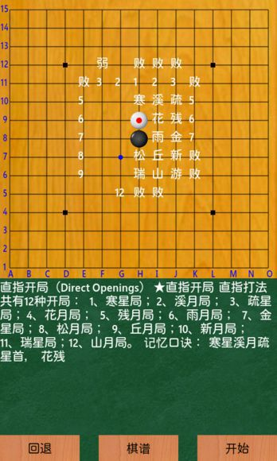
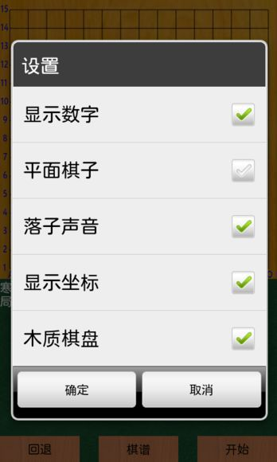

Android 手机打谱软件（800x480)
#1 Android 手机打谱软件（800x480) 作者：加菲老猫 发表时间：2012-12-13 16:33:41
自己写的打谱软件，可以回退，有数字显示，注释字体较大，适合800x480分辨率，棋谱只支持lib格式，打开100多M的棋谱没问题，棋谱读取用的Androidlib的库文件。
截图：
http://pan.baidu.com/share/link?shareid=142943&uk=2919368165

http://pan.baidu.com/share/link?shareid=142945&uk=2919368165

图片不知道怎么发，想试的自己装了看吧。
网盘下载地址：
http://pan.baidu.com/share/link?shareid=142941&uk=2919368165
本站下载：点击下载
［此帖子已被 加菲老猫 在 2012-12-13 16:35:57 编辑过］
［此帖子已被 加菲老猫 在 2012-12-13 16:40:08 编辑过］
［此帖子已被 加菲老猫 在 2012-12-13 16:42:37 编辑过］
［ 有志青年 于 2012-12-13 17:04:02 时奖励此帖[金币加 100 威望加1］
［此帖子已被 有志青年 在 2012-12-13 17:04:35 编辑过］
［此帖子已被 有志青年 在 2012-12-13 17:15:35 编辑过］
［ 有志青年 于 2012-12-13 17:15:48 时奖励此帖[金币加 100 威望加1］
［ 逆刃 于 2012-12-13 18:52:09 时花20金币送鲜花一朵］
［ 逆刃 于 2012-12-13 18:52:09 时花20金币送鲜花一朵］
［ 逆刃 于 2012-12-13 18:52:09 时花20金币送鲜花一朵］
［ 逆刃 于 2012-12-13 18:52:09 时花20金币送鲜花一朵］
［ 逆刃 于 2012-12-13 18:52:09 时花20金币送鲜花一朵］
［ 黄药师 于 2012-12-13 21:17:05 时花20金币送鲜花一朵］
［ 黄药师 于 2012-12-13 21:17:05 时花20金币送鲜花一朵］
［ 黄药师 于 2012-12-13 21:17:05 时花20金币送鲜花一朵］
［ 黄药师 于 2012-12-13 21:17:05 时花20金币送鲜花一朵］
［ 黄药师 于 2012-12-13 21:17:05 时花20金币送鲜花一朵］
［ 黄药师 于 2012-12-13 21:17:05 时花20金币送鲜花一朵］
［ 黄药师 于 2012-12-13 21:17:05 时花20金币送鲜花一朵］
［ 黄药师 于 2012-12-13 21:17:05 时花20金币送鲜花一朵］
［ 黄药师 于 2012-12-13 21:17:05 时花20金币送鲜花一朵］
［ 黄药师 于 2012-12-13 21:17:05 时花20金币送鲜花一朵］
#2 Re:Android 手机打谱软件（800x480) 作者：有志青年 发表时间：2012-12-13 17:14:28
感谢加菲老猫的分享，手机打谱软件目前有三个可以选择了：
王小：androidlib软件【看谱，速度+注释+标记】-2011-9-19更新 继续沉醉：手机五子棋棋谱浏览软件(java版)发布 |
#3 Re:Android 手机打谱软件（800x480) 作者：不明飞行物 发表时间：2012-12-13 18:10:26
造福大家，支持！#4 Re:Android 手机打谱软件（800x480) 作者：刘琦林 发表时间：2012-12-16 14:05:42
真正的好帖!!!!#5 Re:Android 手机打谱软件（800x480) 作者：八了个卦 发表时间：2012-12-18 12:40:57
可以显示数字？真强大#6 Re:八了个卦【==Re:Android 手机打谱软件（800x480)==】 作者：加菲老猫 发表时间：2012-12-19 8:13:47
王小的程序写的真不错，但王小的程序写的早，没有针对大屏手机做优化，用着还是有很多不顺手的地方，就自己动手写了一个程序。能显示数字，整个界面布局按照800x480的分辨率进行的调试，800x480的分辨率也算现在智能手机的标配了。自己写的读谱函数有些棋谱读不出来，lib文件的格式没有完全研究透，后来就用了王小程序里面的棋谱读取函数，给王小同学发了信息一直没回，就自己反编译了他的程序把库文件拿出来了，都是造福棋友，王小不会怪罪吧，在此多谢了。#7 Re:Android 手机打谱软件（800x480) 作者：爱好者友 发表时间：2013-1-18 17:52:37
下了看看，多谢了。#8 Re:Android 手机打谱软件（800x480) 作者：后期 发表时间：2013-2-5 9:57:32
本站下载后安装出错，不知别人安装后如何？
#9 Re:Android 手机打谱软件（800x480) 作者：爱好者友 发表时间：2013-2-16 18:56:27
真不错，我用了，谢谢#10 Re:Android 手机打谱软件（800x480) 作者：黄伟文 发表时间：2013-4-27 22:08:43
请问有高分辨率手机能用的版本吗#11 Re:黄伟文【==Re:Android 手机打谱软件（800x480)==】 作者：加菲老猫 发表时间：2013-5-3 13:56:13
多高的，720p的有一个版本，2560x1600有一个版本#12 Re:加菲老猫【==Re:黄伟文【==Re:Android 手机打谱软件（800x480)==】==】 作者：黄伟文 发表时间：2013-5-10 18:56:33
1280X720分辨率的，谢谢#13 Re:Android 手机打谱软件（800x480) 作者：加菲老猫 发表时间：2013-5-15 10:52:22
#14 Re:Android 手机打谱软件（800x480) 作者：七零八落 发表时间：2013-5-16 22:17:07
好东西 下来用用#15 Re:Android 手机打谱软件（800x480) 作者：打鼠英雄 发表时间：2013-5-23 20:23:36
棋盘太小了，能让棋盘大点就好了#16 Re:Android 手机打谱软件（800x480) 作者：就不帅 发表时间：2013-6-23 23:56:46
安装没问题，，载入lib棋谱也没问题，就是不显示棋谱。载入棋谱时，显示，文件读取完毕，就没了，不显示。。#17 Re:Android 手机打谱软件（800x480) 作者：小丸.net 发表时间：2013-6-24 0:08:06
直接点第一手就行了。#18 Re:Android 手机打谱软件（800x480) 作者：怪 发表时间：2013-8-10 12:39:52
外挂的sd卡不能搜索到目录，只能搜索手机内存的？#19 Re:Android 手机打谱软件（800x480) 作者：天逸乄西西 发表时间：2013-8-24 15:40:16
我拿手机下载不了。。。。为什么呢#20 Re:Android 手机打谱软件（800x480) 作者：超级菜鸟徒弟 发表时间：2013-12-2 22:17:23
非常感谢分享这么好的软件#21 Re:Android 手机打谱软件（800x480) 作者：泉心泉意春春 发表时间：2013-12-6 13:35:56
除了打谱，不知道怎么看棋谱和分析#22 Re:加菲老猫【==Re:黄伟文【==Re:Android 手机打谱软件（800x480)==】==】 作者：土木 发表时间：2014-11-5 17:39:17
720 版本的还有吗？目前一直说安装错误，不知什么原因。谢谢楼主。